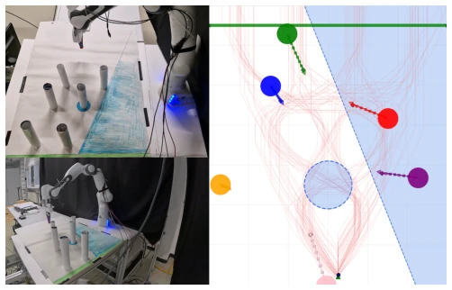
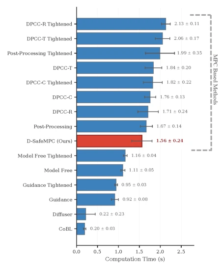

This paper equips diffusion models with "safety guardrails" and a "navigator". D-SafeMPC cleverly embeds discrete-time Control Barrier Functions (CBF) and Lyapunov Functions (CLF) into the diffusion reverse denoising process, then uses Model Predictive Control (MPC) for hard constraint projection. This approach is indeed stable; the Franka robotic arm achieved high success rates in both static and dynamic obstacle avoidance, and even successfully implemented Sim2Real. However, one should not be too optimistic; the optimization computational load of MPC is a constraint, and it may not run well under high-dimensional state spaces (such as visual inputs). Moreover, localization errors in early time steps propagate recursively, which the paper itself acknowledges. Overall, it is a pragmatic solution that finds a balance between safety and performance, but it still lacks some maturity compared to general large models; computational overhead and error propagation are critical drawbacks.
Diffusion models perform exceptionally well in robot trajectory planning, capable of capturing multimodal behaviors, but lack intrinsic mechanisms to enforce safety or dynamic constraints [1], [6]. Generated trajectories often violate physical limitations. Although some hybrid methods use MPC to address this, if the initial trajectory generated by the diffusion model is of poor quality, it can cause MPC to fail to converge, leading to instability [14]. Existing methods such as CoBL-Diffusion, although using CBF/CLF guidance, only employ soft constraints and cannot guarantee hard safety [8]. Therefore, a framework is needed that can both guide the diffusion process and ensure hard constraints through MPC, solving the problem of MPC failure caused by poor initialization. Especially in dynamic obstacle scenarios, existing methods are prone to failure.
The overall process is an iterative projection scheme. First, starting from pure Gaussian noise, at each step of the reverse denoising, the mean predicted by the diffusion model is adjusted using the gradients of discrete-time CBF and CLF, guiding trajectory generation towards safe and target-oriented regions. CBF gradients are used for obstacle avoidance, and CLF gradients are used for approaching the target. Subsequently, MPC is introduced as a corrector to project the guided trajectory into a safe and dynamically feasible set. MPC uses the guided trajectory as a warm start, and the optimization objective includes a regularization term and a deviation term from the guided trajectory. This corrected trajectory is then used as the initialization for the next denoising step. This loop continues until the final step, where the final control action is executed. The key innovation lies in the tight integration of discrete-time CBF/CLF gradient guidance and MPC projection, which leverages the generative capability of diffusion while ensuring constraint satisfaction. Additionally, adaptive weights are employed to handle conflicts between CBF and CLF.

Fig. 2. Experimental setups for static (left) and dynamic (right) obstacle avoidance scenarios. The left panel shows the physical setup for our Sim2Real experiments, featuring static obstacles (white cylinders), a designated safe area (blue), and a goal line (green). The right panel displays the simulation environment with dynamic obstacles (colored circles), whose future paths are indicated by arrows. The faint red lines represent the numerous expert trajectories trained by our framework to safely navigate the environment, while the light blue area indicates a safety constraint.
Simulations and real-robot experiments were conducted on a Franka robotic arm. Scenarios include static and dynamic obstacles. Evaluation metrics are task success rate and safety compliance success rate. Comparison baselines include CoBL, Diffuser, DPCC, etc. Results show that D-SafeMPC achieved the highest safety compliance success rate in dynamic scenarios (1.000), outperforming MPC baselines such as DPCC. In terms of computational efficiency, although slower than methods without MPC, it is faster than pure MPC baselines, benefiting from CBF/CLF providing better initialization. Sim2Real experiments validated the effectiveness of the framework in real physical environments, demonstrating its robustness in complex obstacle avoidance tasks.

Fig. 3. A comparison of the average time (in seconds) each planner requires to generate a control action in the static obstacle environment.